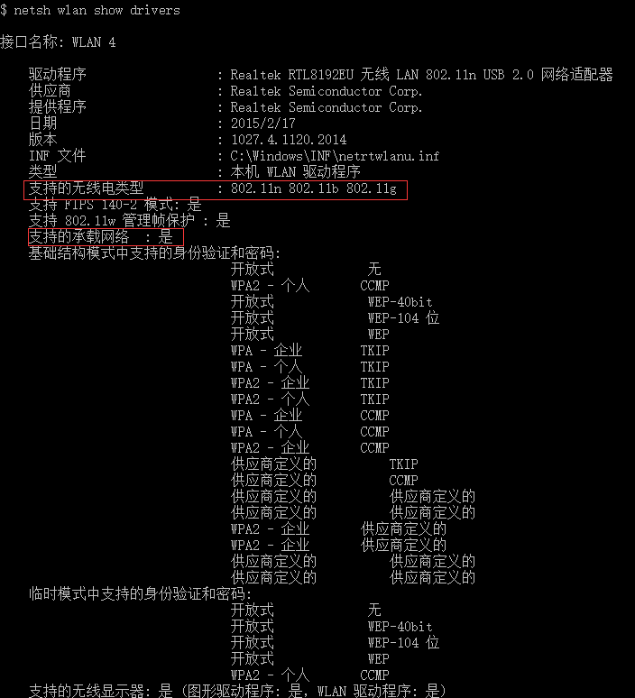

Windows下使用netsh管理无线承载网络
人世间所有的伟大行动都是默默无闻地完成的，而人世间所有具有智慧的人总是能够把握机会，取得成功
无线承载网络是Windows7和之后的操作系统所支持的新特性，其主要是实现物理网卡虚拟化和软件AP。本文主要是用netsh命令来管理无线承载网络。
无线网卡驱动管理
netsh命令如下：
1 | $ netsh wlan show drivers |
该命令能够检测出：
1、系统上是否有无线网卡，如果没有无线网卡会提示系统上没有无线接口
2、无线网卡驱动是否支持无线承载网络功能，以及支持的无线电类型
无线承载网络管理
1、设置无线承载网络
1 | $ netsh wlan set hostednetwork mode=allow ssid=hotspot key=12345678 |
2、启动无线承载网络
1 | $ netsh wlan start hostednetwork |
3、停止无限承载网络
1 | $ netsh wlan stop hostednetwork |
4、查看无线承载网络设置和状态
1 | $ netsh wlan show hostednetwork |
1 | $ netsh wlan show hostednetwork setting=security |
5、刷新无限承载网络安全密钥
1 | $ netsh wlan refresh hostednetwork key |
本文作者：ZeroJiu
本文链接： https://www.freehacker.cn/platform/win-hostednetwork-netsh/
版权声明：本博客所有文章除特别声明外，均采用 CC BY-NC-SA 3.0 CN 许可协议。转载请注明出处！
温馨提示：开启科学上网访问本站，能获得更好的阅读体验，并启用Disqus评论功能和作者交流。